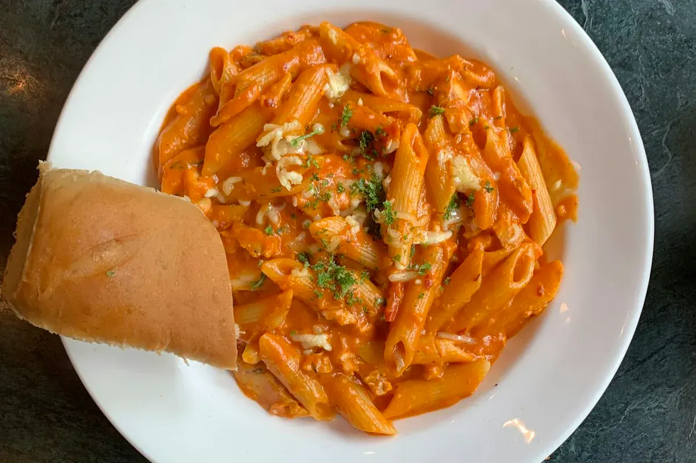

Baked Ziti

Illustrative image.
Baked ziti is the pasta bake people ask for by name. Tubes of ziti hold sauce inside their hollow centres, ricotta adds a creamy layer between the pasta and the meat sauce, and mozzarella melts into a lid across the top that pulls into long strings when you serve it.
This version uses a pound of sausage or beef and a jar of marinara, so it comes together in about twenty minutes of hands-on work before the oven takes over. It feeds six comfortably, or four with leftovers to look forward to.
Ingredients
- 1 lb ziti pasta
- 1 lb ground Italian sausage or ground beef
- 1 jar (24 oz) marinara sauce
- 15 oz whole milk ricotta cheese
- 1 large egg
- 2 cups shredded mozzarella cheese
- 1/2 cup grated parmesan cheese
- 2 cloves garlic, minced
- 1 tsp dried Italian seasoning
- Fresh basil, for garnish
Instructions
- Preheat oven to 375°F (190°C). Bring a large pot of salted water to a boil and cook the ziti until just shy of al dente (it will finish cooking in the oven). Drain and set aside.
- While the pasta cooks, brown the sausage or beef in a large skillet over medium heat, breaking it up as it cooks. Add the garlic and Italian seasoning and cook for another minute, then stir in the marinara sauce and simmer for 5 minutes.
- In a bowl, mix the ricotta with the egg and half of the parmesan until smooth.
- Combine the cooked pasta with the meat sauce, then layer half of it into a greased 9x13 baking dish. Dollop the ricotta mixture over the top, then cover with the remaining pasta.
- Sprinkle the mozzarella and remaining parmesan evenly over the top. Bake uncovered for 25-30 minutes until bubbling and golden. Let rest for 10 minutes, then garnish with fresh basil and serve.
Why this recipe works
Undercooking the pasta by a couple of minutes is the single most important step. The ziti finishes cooking in the sauce, absorbing tomato flavour and staying firm instead of turning to mush. Mixing a little sauce into the pasta before layering keeps the bake from drying out at the edges.
Tips for success
- Cook the ziti one or two minutes short of al dente and drain it well. Wet pasta dilutes the sauce.
- Season the ricotta with the egg, a pinch of salt and a spoonful of parmesan so the creamy layer tastes of something.
- Tent the dish with foil for the first half of baking, then uncover so the cheese browns at the end.
Substitutions that work
- Penne, rigatoni or mezzi rigatoni all work in place of ziti and hold sauce just as well.
- Cottage cheese drained in a sieve for ten minutes can stand in for ricotta with a lighter, slightly tangier result.
- For a vegetarian bake, use a pound of sautéed mushrooms and zucchini in place of the meat and add a teaspoon of fennel seed.
Storage and make-ahead
Covered and refrigerated, baked ziti keeps for four days and reheats well in the microwave or a 325 F oven. Assemble the whole dish up to two days ahead, unbaked and covered, then add ten minutes to the baking time. Freeze individual portions for up to three months.
Serving suggestions
Serve it with a simple green salad dressed in olive oil and lemon, or a plate of garlic bread to mop the dish. It holds up well on a buffet table because it stays hot for a while after it leaves the oven.
Frequently asked questions
Can I use a different pasta shape?
Yes. Any short tube or ridged shape works, including penne, rigatoni and cavatappi. Avoid long pasta, which tangles when you try to layer it.
How do I keep baked ziti from drying out?
Mix a cup of the sauce through the pasta before layering, cover with foil for the first twenty minutes, and do not bake it past the point where the sauce bubbles at the edges.
Can I make baked ziti without meat?
Yes. Leave the meat out and add sautéed mushrooms, zucchini or a bag of frozen spinach that has been squeezed dry, plus an extra cup of sauce.